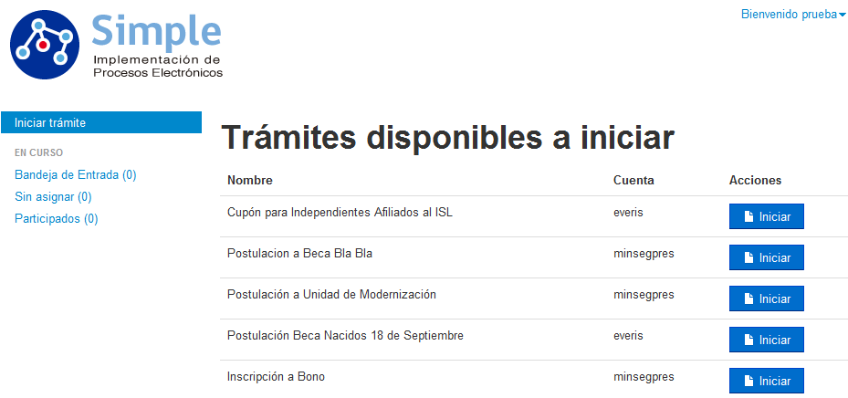
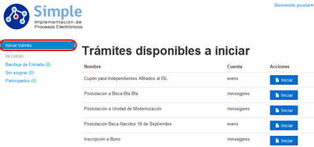
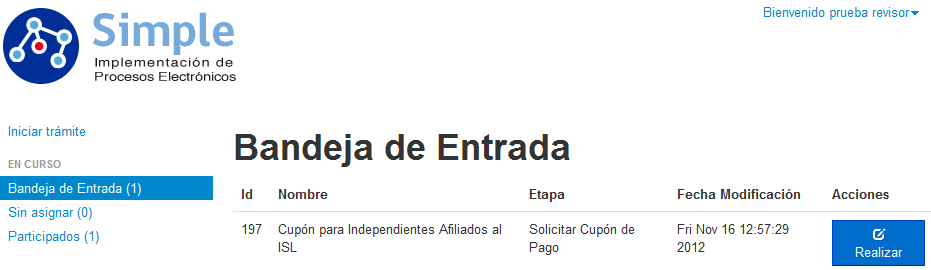
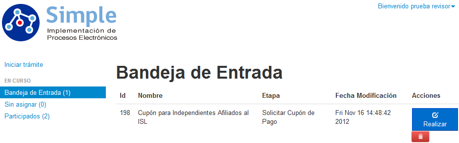
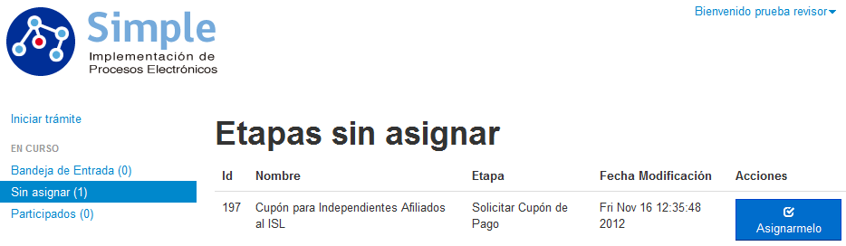
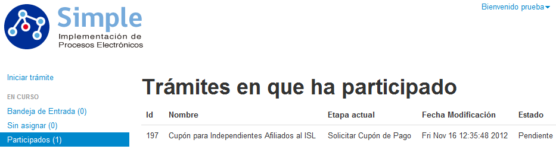

3.1.3 Perfil de Usuarios Institucionales: Participantes de la gestión y realización de un Trámite - Ventana Principal
Al ingresar un usuario registrado al portal y este además tiene privilegios especiales dado por el generador de Modelo de Procesos, se desplegará una ventana con las operaciones disponibles similar que la ventana de trabajo para usuarios registrados, como se visualiza en la siguiente imagen:

Figura 63: "FrontEnd Simple – Ventana Principal de Usuarios Registrados"
Dentro del bloque central de la ventana se despliega el listado de los trámites que pueden realizar los usuarios públicos, los usuarios registrados y los usuarios asignados directamente. Mientras que en el bloque de la izquierda, será posible gestionar los trámites visualizando los trámites que están en bandeja de entrada, los trámites sin asignar y los trámites que el usuario registrado ha participado. A continuación se explicarán cada una de las opciones de los enlaces.
Enlace Iniciar Trámite : corresponde a la opción predeterminada que se abrirá al ingresar al portal, esta opción lista todos los trámites disponibles, tanto para trámites públicos, trámites sólo para usuarios registrados y trámites que hayan sido asignados directamente, para proceder a iniciar un nuevo trámite simplemente seleccione el botón , dentro de la fila del trámite que desea iniciar.

Figura 64: "FrontEnd Simple: Listado de Trámites disponibles a iniciar"
Enlace Bandeja de Entrada : con esta opción al usuario podrá revisar los trámites que se les ha sido asignado mediante un listado, por lo que podrá revisar y realizar, cada trámite asignado uno a uno.

Figura 65: "FrontEnd Simple: Bandeja de Entrada"
Para gestionar un trámite pendiente de realización, deberá hacer clic sobre el botón Realizar.
Para eliminar un trámite desde la Bandeja de Entrada, es posible de realizar únicamente si en la gestión del trámite no existe participación de otros usuarios, esto lo podrá identificar porque bajo el trámite aparecerá el icono , en el que al realizar clic se podrá eliminar el trámite del sistema, considere que las eliminaciones no son reversibles.

Figura 66: "Eliminación de Trámites sin asignación desde la Bandeja de Entrada"
Enlace Sin Asignar : con esta opción podrá revisar los trámites generados los cuales no tengan usuario ni grupo para su gestión (revisión), con esta opción usted podrá autoasignarse trámites para su gestión lo que hará que el trámite se mueva a su bandeja de entrada. Las opciones de la ventana Sin Asignar se visualizan en la imagen siguiente.

Figura 67: "FrontEnd Simple: Etapas Sin Asignar"
Para autoasignarse el trámite sin asignación, simplemente presione el botón Asignármelo. Al hacer esto el trámite irá inmediatamente a la bandeja de entrada de su usuario.
Enlace Participados : con esta opción usted podrá ver el listado de todos los trámites que ha participado, en donde se le indicará su ID, el nombre del trámite que ha realizado, la etapa actual en que se encuentra el trámite, la última fecha que ha sido modificado dentro del proceso y el estado del trámite. Tal como se puede visualizar en la imagen siguiente.

Figura 68: "FrontEnd Simple: Listado de Trámites participados"